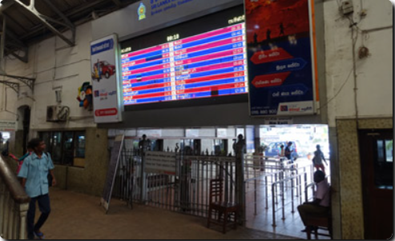
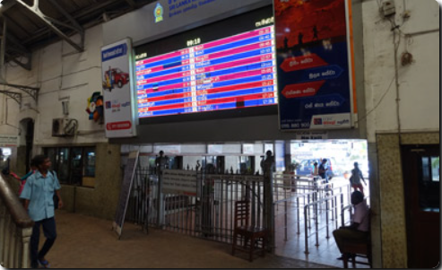

On this page you'll find timetables & fares for the most popular trains, stations & routes:
- Colombo - Kandy - Hatton - Nuwara Eliya - Elle - Badulla
- Colombo - Galle - Matara
- Colombo - Galoya - Polonnaruwa, Batticaloa, Trincomalee
- Colombo - Anuradhapura - Talaimannar/Vavuniya - Jaffna
- Colombo commuter: Negombo, Mt Laviniya, Kalutara, Puttalam, Avissawella
Colombo Fort station
Opened in 1917, Colombo Fort is Colombo's main station, right in the heart of the historic Fort area, walking distance from all the sights. All mainline & commuter trains go from here. Colombo has a second main station one stop (2 km) to the east called Maradana, most but not all trains stop here, but Colombo Fort is the best-located station to use. See a map of Colombo showing stations.
 
